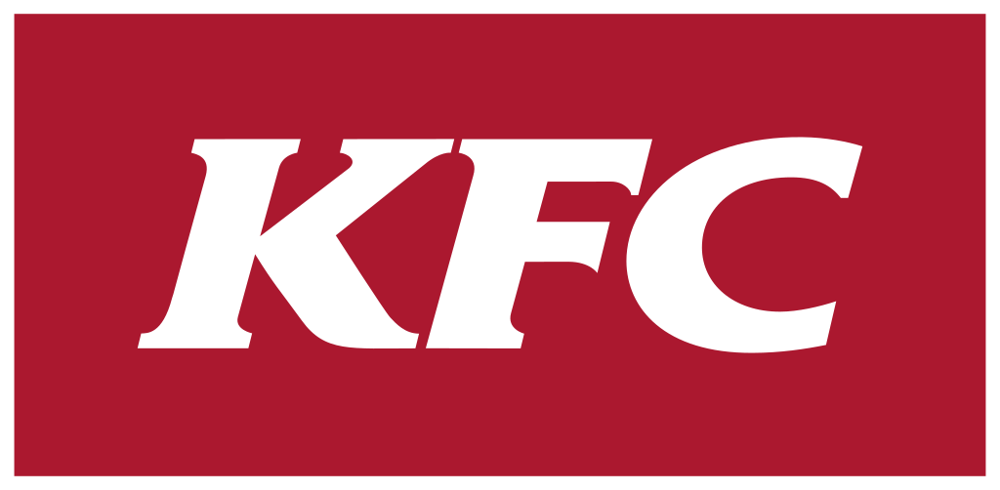

Kentucky Fried Chicken
KFC(Kentucky Fried Chicken)는 할랜드 샌더스 대령이 창립한 미국 기반의 글로벌 프라이드 치킨 프랜차이즈이다.
최종 업데이트
Kentucky Fried Chicken는 어떤 브랜드인가
KFC(켄터키 프라이드 치킨)는 미국의 대표 치킨 패스트푸드 브랜드다. 창업자 할랜드 샌더스(Harland Sanders)는 1930년 켄터키주 코빈의 주유소에서 여행객에게 압력솥으로 튀긴 치킨을 팔며 명성을 쌓았고, 그 비법을 무기로 1952년 첫 프랜차이즈 매장을 열었다.
주유소 식당에서 출발해 프랜차이즈 모델로 전환한 것이 첫 번째 분기점, 1960년대 캐나다·영국 등으로 진출하며 글로벌 외식 체인으로 도약한 것이 두 번째 전환점이다. 현재 전 세계 매장 수는 3만개를 넘어섰다.
Kentucky Fried Chicken는 어떻게 봐야 할까
가장 큰 경쟁 구도는 햄버거 1위 맥도날드와의 패스트푸드 패권 다툼이지만, KFC는 '치킨 전문'이라는 명확한 포지션으로 차별화한다. 핵심 무기는 샌더스가 완성한 11가지 비밀 허브·향신료 배합으로, 이 레시피 자체가 강력한 브랜드 자산이자 경쟁사가 모방하기 어려운 진입 장벽이다.
운영 주체는 피자헛·타코벨을 함께 거느린 모회사 얌 브랜즈(Yum Brands) 산하이며, 최근에는 신메뉴·매장 디자인·브랜딩을 동시에 손보는 글로벌 리뉴얼과 디지털·소스 특화 매장으로 변화를 꾀하고 있다. 한국에서는 1984년 서울 종로에 1호점을 열며 진출했고, 종로점은 한때 도심 약속 장소의 상징이 됐다.
Kentucky Fried Chicken는 어떻게 시작되고 성장했나
창업자 할랜드 샌더스는 증기기관 화부, 보험 영업 등 여러 직업을 거친 뒤 1930년 켄터키주 코빈의 셸 주유소를 인수해 여행객에게 직접 만든 프라이드 치킨을 팔기 시작했다. 이 시기에 압력솥 조리법과 비밀 양념 배합을 가다듬었다.
사업 확장 가능성을 본 그는 1952년 유타주 사우스솔트레이크의 피트 하먼(Pete Harman)에게 첫 프랜차이즈를 내줬고, 가맹 첫해 매장 매출이 세 배 이상 뛰며 모델의 위력을 입증했다. 1960년대 들어 가맹점이 급증하자 고령의 샌더스는 1964년 브랜드의 미국 사업 권리를 투자자 그룹에 매각했고, 이후 회사는 여러 차례 주인이 바뀌며 국제 확장을 가속했다.
샌더스 본인은 흰 양복 차림의 '커넬'로 광고 모델 역할을 이어갔다.
Kentucky Fried Chicken의 브랜드 아이덴티티는 무엇인가
브랜드 정체성의 중심에는 흰 양복과 검은 넥타이, 안경, 흰 수염의 창업자 커넬 샌더스 얼굴 로고가 있다. 이 인물 로고는 진정성과 손맛, 오랜 전통을 상징하며 브랜드를 의인화한다.
핵심 색상은 강렬한 빨강과 흰색으로 식욕과 활력, 친근함을 전달한다. 타깃은 가성비 좋은 든든한 한 끼를 찾는 가족·청년층 등 폭넓은 대중이며, 보이스는 유쾌하고 자신감 있으면서도 정겨운 미국식 화법을 띤다.
'It's finger lickin' good'으로 대표되는 메시지처럼 맛에 대한 자부심을 핵심 가치로 내세운다.
Kentucky Fried Chicken의 대표 제품과 서비스는 무엇인가
대표 메뉴는 11가지 양념으로 압력 조리한 오리지널 치킨과, 더 바삭하고 매콤한 핫크리스피 치킨이다. 매콤한 치킨 패티를 끼운 징거버거(Zinger), 텐더, 너겟, 비스킷, 감자 웨지, 콜슬로 등 사이드와 콤보도 폭넓게 갖췄다.
가격대는 단품 조각부터 가족 단위 버킷까지 다양해 수천 원대 단품부터 만원 단위 세트까지 형성된다. 유통은 직영·가맹 매장과 드라이브스루, 배달 앱, 자체 모바일 주문 등 온·오프라인 채널을 함께 운영한다.
Kentucky Fried Chicken는 지금 어떤 상태인가
모회사는 켄터키주 루이빌에 본사를 둔 얌 브랜즈(Yum Brands)이며, KFC는 그 산하 핵심 브랜드다. 전 세계 매장 수는 3만개를 넘어 150여 개국 이상에 진출해 있으며, 평균적으로 몇 시간마다 새 매장이 문을 연다.
브랜드 연 매출은 약 28억 달러 규모로 알려져 있고, 모회사 부문 영업이익에서 큰 비중을 차지한다. 한국에는 1984년 종로 1호점으로 진출해 40주년을 맞았으며, 그동안 오리지널·핫크리스피 치킨이 11억 조각가량 팔린 것으로 집계됐다.
일부 세부 재무 수치는 미공개다.
Kentucky Fried Chicken 연혁 — 주요 사건은 언제였나
Kentucky Fried Chicken 로고는 어떻게 변해왔나

BI/CI 아카이브보관 이미지 1 BI/CI 아카이브 2보관 이미지 2
BI/CI 아카이브 2보관 이미지 2자주 묻는 질문
Kentucky Fried Chicken는 어떤 산업의 브랜드인가요?
Kentucky Fried Chicken는 식음료 분야의 브랜드입니다.
Kentucky Fried Chicken의 브랜드 아이덴티티는 무엇인가요?
브랜드 정체성의 중심에는 흰 양복과 검은 넥타이, 안경, 흰 수염의 창업자 커넬 샌더스 얼굴 로고가 있다.
Kentucky Fried Chicken의 대표 제품은 무엇인가요?
대표 메뉴는 11가지 양념으로 압력 조리한 오리지널 치킨과, 더 바삭하고 매콤한 핫크리스피 치킨이다.
Kentucky Fried Chicken는 어느 기업이 소유하고 있나요?
모회사는 켄터키주 루이빌에 본사를 둔 얌 브랜즈(Yum Brands)이며, KFC는 그 산하 핵심 브랜드다.
Kentucky Fried Chicken의 공식 웹사이트는 어디인가요?
Kentucky Fried Chicken의 공식 웹사이트는 https://global.kfc.com/ 입니다.
출처와 검증
Kentucky Fried Chicken 관련 참고: 공식 웹사이트. 브랜드명은 한글과 원어를 함께 표기하되 데이터에 없는 표기는 만들지 않습니다. 기원 국가·설립연도는 검수된 정의문에서 확인된 값을 우선하고, 없을 때만 공식 웹사이트 URL이 일치하는 위키데이터 개체의 값을 씁니다.